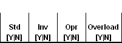

Load Combination Definition
(See bottom of page for Example Entry)
Description
This table is used to reference sets of trucks, lanes, and factors into a set that are combined for capacity and rating calculations.
Parameters
Name
Specify a unique name for a loading configuration.
Truck Group
Reference a Truck Group from Truck Group Definition
Lane Group
Reference a Lane Group from Lane Group Definition
Lane Load Reduction
Reference a set of lane load reduction factors from Lane Load Reduction Definition
Rate Location
Reference a Rate Location collection name.
Std
Put a Y in this column to do a “Standard / WSDOT” capacity and rating calculation.
Inv
Put a Y in this column to do an Inventory capacity and rating calculation.
Opr
Put a Y in this column to do an Operating capacity and rating calculation.
OverLoad
Put a Y in this column then the Overload Rating Factors for LFR for denominator live loads will be used.